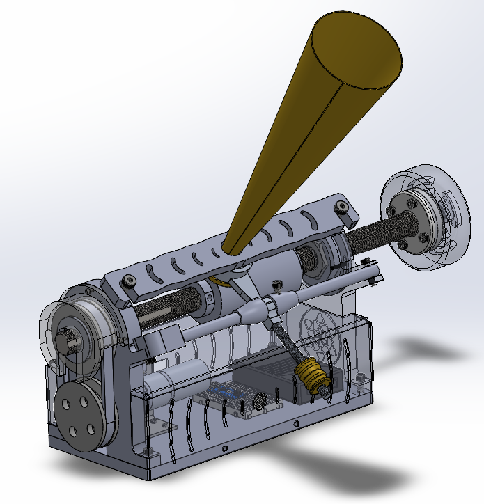
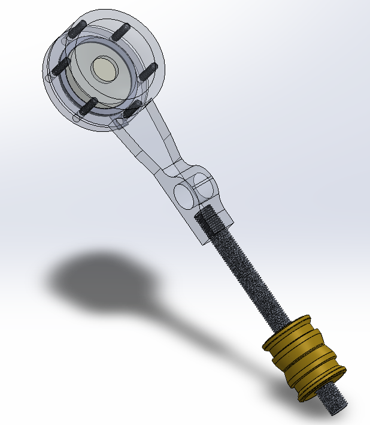
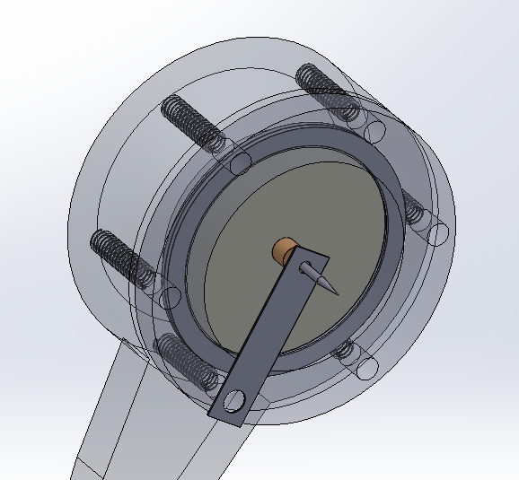
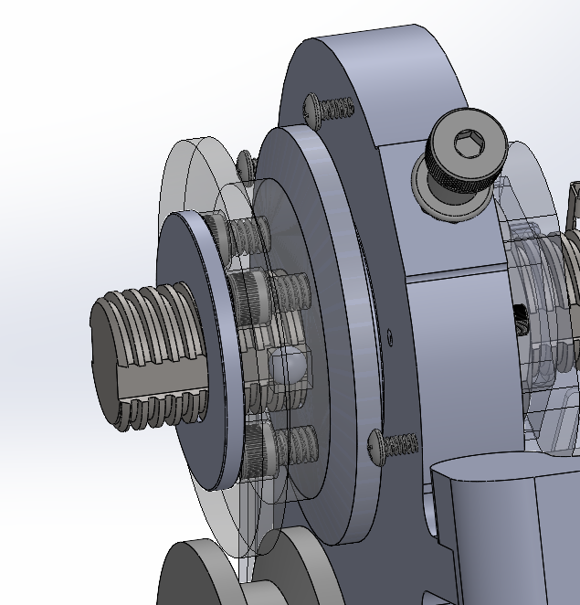
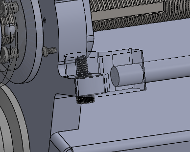
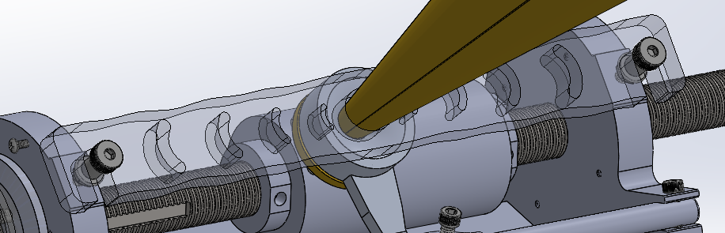
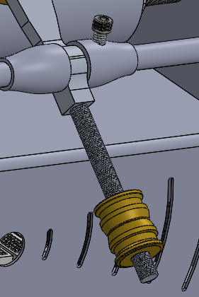

Project Overview
The Edison phonograph, invented in 1877, was the first device capable of both recording and reproducing sound. Our IPD 5010 (Sound and Motion) project recreates this groundbreaking technology using a combination of precision CNC machining, 3D printing, hand fabrication, and modern Arduino-based control systems while maintaining the core mechanical recording mechanism that made the original revolutionary.
Rather than simply replicating the original design, we adapted Edison's principles to modern manufacturing capabilities. The system features a precision leadscrew mechanism that translates the recording stylus across a rotating aluminum tape-wrapped cylinder at constant 120 RPM. Sound waves travel through a hand-rolled brass horn to a diaphragm-mounted stylus that mechanically etches vibration patterns into the tape, which can then be played back by reversing the motor direction.
Mechanical Transmission System
Power Flow Path: The 36mm BLDC motor drives a bottom pulley via set screw connection, which transmits power through a V-belt to the top pulley. The top pulley drives the leadscrew rotation, converting rotational motion into linear translation of the cylinder carriage. This belt-driven approach provides vibration isolation between the motor and recording mechanism—critical for clean audio recording.
The leadscrew pitch was carefully selected to provide appropriate groove spacing for audio fidelity, while the pulley ratio was sized to achieve exactly 120 RPM cylinder speed from the motor's base rotational velocity. Arduino Uno microcontroller manages motor direction (forward for record, reverse for playback) and monitors dual limit switches at travel endpoints for automatic stop functionality.

Complete CAD assembly showing leadscrew, cylinder, and belt transmission
Recording Mechanism Design
The stylus assembly consists of a thin flexible diaphragm cap that vibrates in response to sound pressure, a rigid carriage cap that holds the stylus and diaphragm in precise position, and a sharp needle stylus that etches grooves into aluminum tape.
Thicker aluminum tape instead of standard kitchen foil serves as the recording surface, wrapped around the rotating cylinder with controlled tension to prevent wrinkling. The tape provides sufficient compliance for stylus indentation while maintaining its shape during playback. After recording, the tape can be carefully removed and replaced with fresh material for new recordings.

Diaphragm assembly with mounting structure and brass counterweight

Close-up view of needle stylus and silicon gasket mounting
Arduino Motor Control System
The Arduino Uno R3 microcontroller serves as the brain of the phonograph, managing motor speed control, direction switching, and safety monitoring through limit switches. The control system uses PWM (Pulse Width Modulation) to regulate the 36mm BLDC planetary gear motor (model NF-GA36Y-3650), maintaining a constant 120 RPM regardless of mechanical load variations during recording and playback.
Motor Specifications & Wiring: The NF-GA36Y-3650 is a 12V/24V high-torque brushless DC motor with integrated planetary gearbox. The motor features 5 color-coded wires with specific functions:
- Red wire: VCC motor power supply (+24V in our implementation)
- Black wire: GND motor power supply (ground/negative)
- White wire: Forward and reverse control - connect with black wire (GND) for one direction, disconnect for opposite direction
- Blue wire: PWM speed control wire (0-5V pulse width modulation signal from Arduino pin 9)
- Yellow wire: FG signal wire (frequency generator output) - provides square wave pulses for speed feedback, functioning as a rotational encoder signal
Motor Control Implementation: The Arduino code (Arduino Uno pins: PWM on pin 9, direction on pin 8, feedback on pin 2) reads the FG signal from the yellow wire to determine rotor position and calculate instantaneous RPM. The yellow wire outputs square wave pulses that can be detected by monitoring pulse frequency—equivalent to a single-wire encoder. By counting pulses over time and accounting for the 14:1 gear ratio and 6 pulses per revolution, the system calculates output shaft RPM.
When mechanical load increases (such as stylus friction during recording), the system detects RPM drop through pulse timing on the yellow FG wire and automatically increases PWM duty cycle on the blue wire to maintain constant 120 RPM rotational velocity. This closed-loop feedback ensures consistent groove spacing critical for playback fidelity. The red and black wires supply power through a variable 24V DC power supply.
Direction Control: A physical toggle switch (Arduino pin 11) connected to the Arduino determines motor direction through the white wire: when the white wire is connected to ground (black wire), the motor rotates in one direction for recording; when disconnected, it reverses for playback. The Arduino controls this electronically via pin 8 that switches a relay or transistor connecting/disconnecting the white wire.
Safety System: Two limit switches mounted at the leadscrew travel endpoints connect to Arduino digital pins 3 (home) and 4 (end) with internal pull-up resistors. The home switch uses hardware interrupt capability on pin 3 for immediate response. When the carriage reaches either end, the corresponding switch triggers, and the Arduino immediately cuts motor power via PWM pin 9 to prevent mechanical damage. A power switch on pin 10 provides manual emergency shutoff capability.
Detailed Mechanical Design Mechanisms
1. Leadscrew Rotation Mechanism:
The leadscrew achieves simultaneous rotation and horizontal translation through a clever mechanical constraint system. Two hex nuts are embedded within the left and right side mounts and secured with 3D-printed covers, preventing the nuts from rotating. As the motor drives the bottom pulley and V-belt transmits power to the top pulley, the leadscrew rotates while these fixed nuts act as anchor points.
Power transfer from the top pulley to the leadscrew occurs through a ball bearing interface. The leadscrew was machined and faced down to create a precision groove accommodating two ball bearings (one top, one bottom) positioned between the leadscrew and a machined slot in the top pulley. This bearing connection allows rotational motion transfer while maintaining axial alignment. As the leadscrew rotates through the stationary nuts, it translates horizontally, carrying the cylinder carriage along its threaded shaft.

Leadscrew with fixed nuts and ball bearing connection to top pulley
2. Pivot Arm for Stylus Engagement:
The diaphragm and stylus assembly mounts on a pivot arm that allows the stylus to be disengaged and removed once recording is complete. This design prevents the needle from remaining in contact with the aluminum tape during homing operations or when the system is idle, protecting both the stylus tip and the recorded grooves from accidental damage. The pivot mechanism provides smooth engagement/disengagement while maintaining precise vertical alignment when lowered onto the recording surface.

Pivot arm allowing stylus engagement and disengagement
3. Horn Positioning System:
Two 0.25" clear acrylic plates position the brass horn precisely at the center of the diaphragm, creating an optimal acoustic coupling interface. This acrylic positioning system allows the horn to be hand-held with stability and repeatable alignment during both recording (amplifying user's voice input) and playback (amplifying mechanical vibrations from the stylus). The clear acrylic maintains visibility of the diaphragm for alignment verification while providing rigid support.

Clear acrylic horn positioning system for precise diaphragm alignment
4. Counterweight Tension Adjustment:
Brass counterweights threaded onto the diaphragm arm provide fine adjustment of stylus contact force on the aluminum tape. Insufficient tension produces inadequate groove depth resulting in weak playback, while excessive tension risks tearing through the tape entirely. Through iterative testing, we determined the optimal counterweight position that produces clear groove impressions without tape damage—balancing recording fidelity against recording surface integrity.

Brass counterweights on threaded rod for stylus force adjustment
5. Electrical Control Components:
- Arduino Uno R3: Central microcontroller managing motor control via PWM (pin 9), direction control (pin 8), FG signal monitoring (pin 2), and limit switch detection (pins 3, 4)
- Dual Limit Switches: Normally-open microswitches at travel endpoints (home on pin 3 with interrupt, end on pin 4 polled) trigger automatic motor shutoff
- Power Switch (pin 10): Main power ON/OFF control
- Direction Switch (pin 11): Toggle switch selecting forward (record) or reverse (playback) motor rotation
- 24V Variable Power Supply: Adjustable DC source providing power to motor red (+) and black (GND) wires
- Motor Driver Circuit: Interfaces Arduino 5V logic with 24V motor power, controls blue wire PWM input and white wire direction control
Multi-Process Manufacturing Approach
The project strategically combined multiple manufacturing processes to balance precision, cost, and development speed. CNC machining was used for critical rotating components (leadscrew, cylinder, pulleys, bearing mounts) requiring tight tolerances and concentricity. 3D printing (PLA) enabled rapid iteration on non-critical parts like limit switch mounts and motor housing. Hand fabrication of the brass horn saved significant cost compared to outsourcing while demonstrating traditional metalworking skills.
Laser cutting via OshCut was used for the A36 steel frame components (base plate, motor mount, left/right mounts) and the sheet metal electronic enclosure. The horn positioner acrylic plates were also laser cut for precise dimensions. All machined parts were programmed using Mastercam and produced on CNC mills and lathes in the university machine shop, with final assembly requiring careful attention to bearing alignment and belt tensioning.